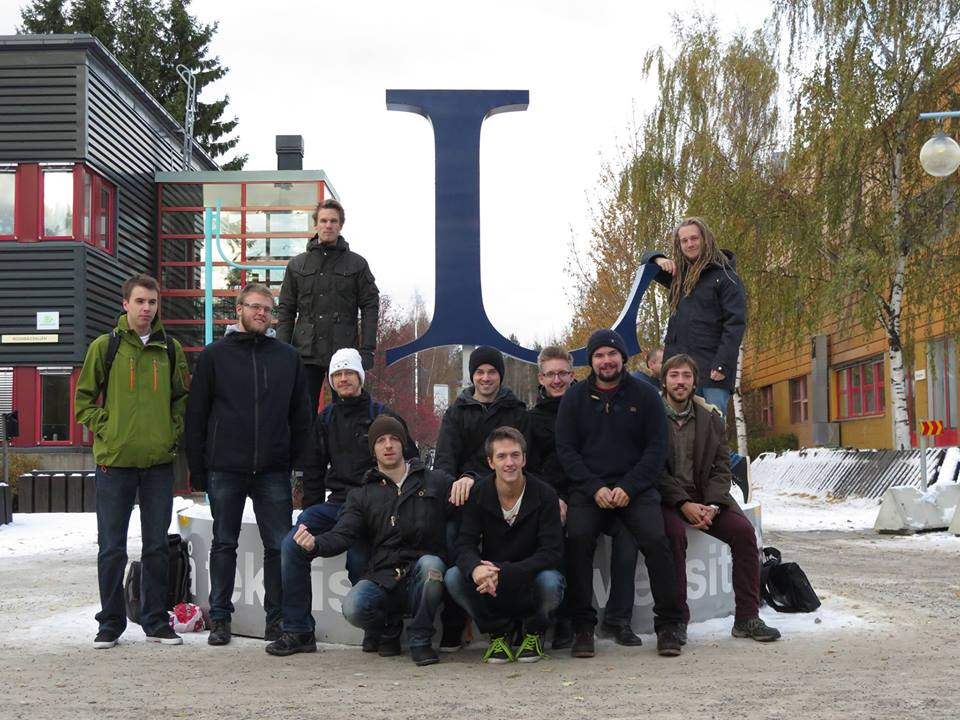

Varför gör vi detta egentligen?
Utöver att det är fantastiskt roligt att leka med teknik och skapa konst vill Ljus++ lämna ett avtryck hos invånarna i Luleå. Vi vill visa att man med en kombination av konstnärlig vision och modern teknik kan få människors uppmärksamhet och på så sätt förmedla budskap och information genom ”levande” installationer. Grundsyftet med projektet är att med hjälp av modern teknik visa på den energi som finns runt omkring oss hela tiden. Trädet Hjärteglöd är ett första steg i denna riktning där tekniken, konsten och energin är på plats. Installationen kommer efter Höstfestivalen byggas om till ett nytt konstverk som är menat att förmedla ett budskap till stadens invånare.
Vad händer efter Höstfestivalen?
Projektet har nått sin första milstolpe och det är dags att gå vidare. Hjärteglöd kommer designas om till ett nytt tekniskt ljuskonstverk inriktat på att förmedla ett nytt budskap.
Våran mysiga lilla grupp
 Ifrån vänster till höger Simon Ekström, Michael Königsson, Anders Ragnarsson, Harald Andersson, Per Grundtman, Johan Forsling, Martin Persson, Erik Hellström, Trolle Geuna, Peter Bell och Jimmie van Eijsden